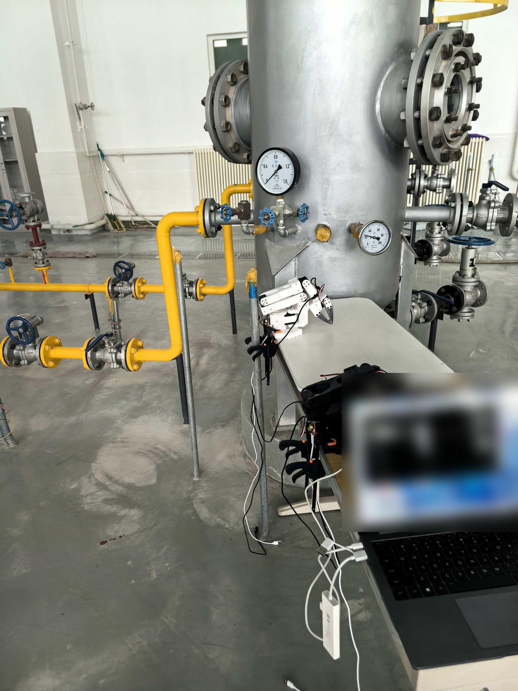
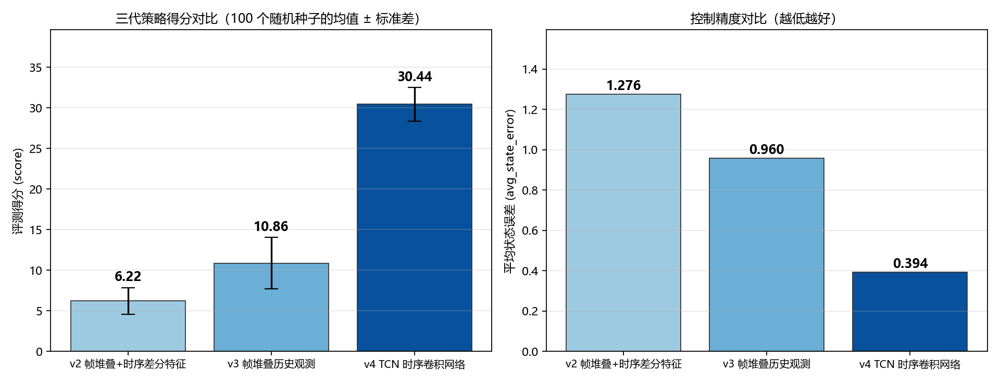
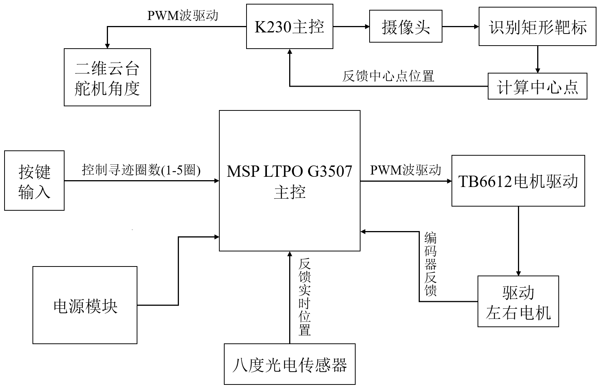
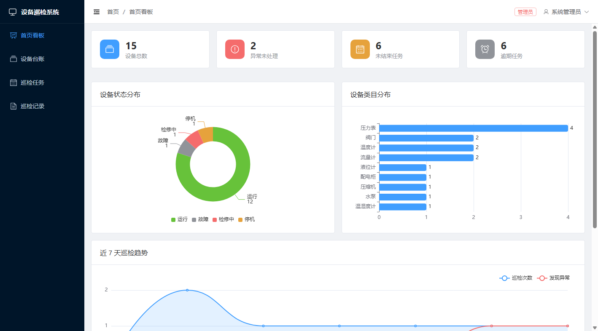
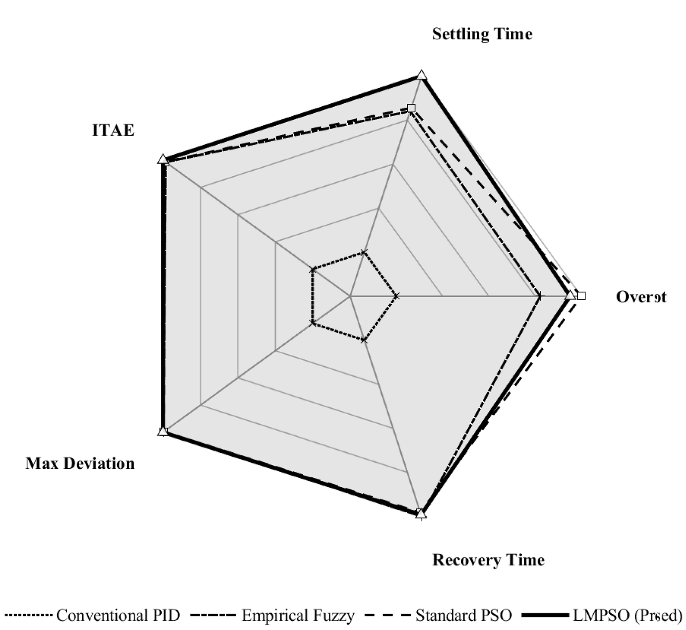
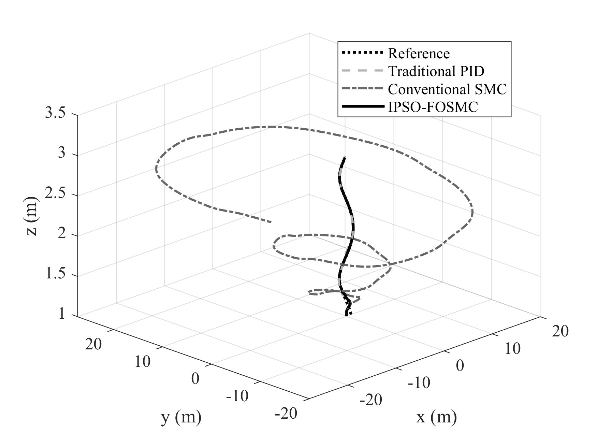
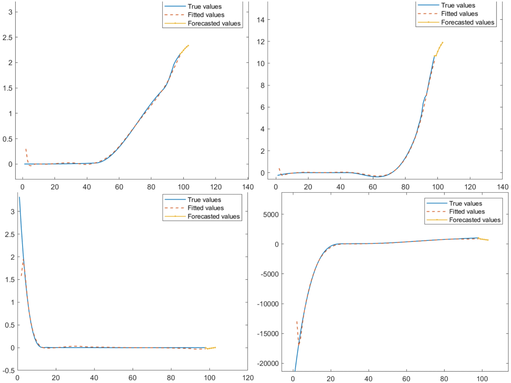
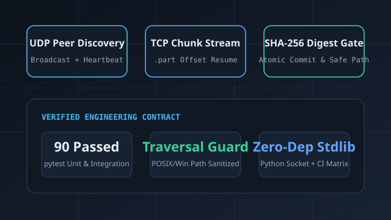

页面汇总了本科阶段在不同方向上的实验与工程代码，涵盖工业仪表擦拭机械臂（LeRobot ACT 91.2%）、离线强化学习三代对照（6.22 → 30.44）、 两篇第一作者 EI 控制仿真论文、TI MSPM0 + K230 视觉瞄准小车（省二）与 SpringBoot 3 + Vue 3 设备巡检系统，相关结果均附有脚本或测试记录。
本科核心课程（高数 A 100 / 辅助绘图 99 / 过程检测仪表 96 / 网络通信 96 / 计算机控制 94 / 自控 91）为后续在控制、算法与软件工程方向的实践打下了基础。
机械臂遥操作示教采集与 8 类工况数据划分、ACT 模仿学习微调，以及离线强化学习策略迭代与多种子统计评测。
TI MSPM0 + CanMV-K230 / STM32 / 8051 嵌入式程序编写、PWM/ADC/UART 联调，以及分数阶滑模与改进 PSO 控制仿真。
基于 Spearman 相关检验与 XGBoost 的临床数据建模、ARIMAX 序列与波动分析，以及多工序生产抽样决策优化。
SpringBoot 3 + MyBatis-Plus + Vue 3 + Docker 前后端实现、基于 Socket 的 P2P 文件校验同步重构与自动化单元测试。
可按目标岗位或研究方向筛选对应项目（点击卡片链接可访问相应 GitHub 仓库）。



下位机使用 TI MSPM0G3507（8 路光电阵列 + 位置式 PID 差速循迹），上位采用 CanMV-K230（320×240 ROI 识别靶标 + 增量式 PID 云台瞄准），仓库另单独隔离了 2023 参考资料。


针对大滞后非线性温度对象，在粒子群算法中引入权重调节与 Levy 飞行机制改善参数整定；仓库包含完整的 MATLAB/Simulink 仿真脚本与 12 项性能指标对比图。

建立六自由度四旋翼耦合动力学及外部扰动模型，结合分数阶微积分算子与改进粒子群整定滑模参数，减小抖振并完成三维螺旋轨迹跟踪仿真对比。

整理 2025 国赛 NIPT 无创产检（Spearman 检验、XGBoost 与 BMI 分组）、2024 国赛多工序抽样决策，以及 2024/2025 统计建模大赛的时序预测分析代码。

在课程项目基础上独立重构：使用 UDP 节点发现与 TCP 文件传输，改用 SHA-256 校验文件内容，支持 `.part` 断点续传与路径安全校验，并补齐 90 项 pytest 测试。
本科阶段作为第一作者撰写并发表 EI 会议论文两篇，对应的仿真源码与实验图表均已整理开源。
建立四旋翼六自由度耦合动力学及误差模型，结合分数阶滑模控制律与改进粒子群参数寻优，对比外部扰动下的姿态响应与三维轨迹跟踪收敛过程。
查看源码与轨迹对比图 →针对大滞后非线性温度控制对象，引入惯性权重调节与 Levy 飞行策略优化模糊 PID 参数，从超调量、调节时间与 ITAE 指标完成与传统控制器的仿真对比。
查看源码、Simulink 框图与评估图 →以下信息依据校方成绩单、获奖证书与个人本科经历如实整理。
说明几处读者可能会关注的仓库署名范围与资料口径问题。
本人为 2023 级本科生，实际参赛并获奖的是 2025 年电赛 E 题（TI MSPM0G3507 + K230，新疆赛区二等奖）。仓库内原附带的 2023 E 题代码是备赛期间收集研读的第三方公开参考（原始说明中也保留了原作者与模型注释），因此单独移入 references/2023-e-third-party-reference/ 并附对比说明，不将其混作本人成果；2025 赛题文档与结构框图均提取自本人参赛报告。
本科专业是自动化，课程和科研以控制算法、嵌入式与建模为主；在做机械臂和电赛硬件调试时，也接触到数据采集、记录管理与多端文件同步的需求，因此结合课余时间补充了后端、前端与网络编程的工程实践。每个仓库均明确区分了实验背景、工作内容与测试覆盖范围。
由于个人主页在 GitHub 公开托管，站内提供的 assets/resume.pdf 主动隐去了个人手机号与学号，仅保留联系邮箱与公开教育/项目信息。如需完整版简历或进一步沟通，欢迎通过邮箱 ffgxfvy5562@163.com 联系。